직업상담사-2급 (2016-05-08 기출문제)
1과목: 직업상담학
1. Super의 발달적 직업상담에서 의사결정에 이르는 단계를 바르게 나열한 것은?
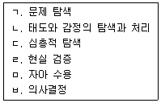
- ㄱ→ㄴ→ㄷ→ㄹ→ㅁ→ㅂ
- ㄱ→ㄷ→ㄴ→ㄹ→ㅁ→ㅂ
- ㄱ→ㄷ→ㅁ→ㄹ→ㄴ→ㅂ
- ㄱ→ㄷ→ㄹ→ㅁ→ㄴ→ㅂ
(정답률: 76%)

2. 다음 내담자의 진술에 가장 수준이 높은 수용적 존중 반응은?
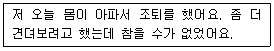
- 아플 땐 쉬어야지 건강해야 일도 잘 할 수 있지.
- 그래, 자네니깐 그만큼이나 참았지. 자네 웬만하면 조퇴하지 않는 거 알지.
- 몸이 조금 아프다고 자꾸 조퇴하면 안 되지.
- 몸이 아프면 힘들지. 그동안 좀 무리했지.
(정답률: 85%)
3. 행동주의적 상담기법 중 학습촉진 기법이 아닌 것은?
- 강화
- 변별학습
- 대리학습
- 체계적 둔감화
(정답률: 79%)
4. Williamson이 분류한 직업선택의 주요 문제영역이 아닌 것은?
- 직업 무선택
- 직업 선택의 확신 부족
- 정보의 부족
- 현명하지 못한 직업선택
(정답률: 82%)
5. 정신역동 상담이론에 관한 설명으로 옳은 것은?
- 정신분석에서 해석은 목적 지향적으로 이루어진다.
- 개인심리학에서는 내담자의 심리내적인 갈등이 가장 중시된다.
- 정신분석에서 내담자가 상담자에게 느끼는 모든 감정은 전이의 표현이다.
- 개인심리학에서 상담자는 내담자에 대한 광범위한 격려의 사용을 권장한다.
(정답률: 44%)
6. 내담자중심 상담이론의 특징이 아닌 것은?
- 동일한 상담원리를 정상적 상태에 있는 사람이나 정신적으로 부적응 상태에 있는 사람 모두에게 적용한다.
- 상담은 모든 건설적인 대인관계의 실제 사례 중 단지 하나에 불과하다.
- 실험에 기초한 귀납적인 접근방법이며, 실험적 방법을 상담과정에 적용한다.
- 상담의 과정과 그 결과에 대한 연구조사를 통하여 개발되어 왔다.
(정답률: 76%)
7. 내담자의 인지적 명확성을 사정할 때 고려할 사항이 아닌 것은?
- 직장을 처음 구하는 사람과 직업전환을 하는 사람의 직업상담에 관한 접근은 동일하게 해야 한다.
- 직장인으로서의 역할이 다른 생애 역할과 복잡하게 얽혀 있는 경우 생애 역할을 함께 고려한다.
- 직업 상담에서는 내담자의 동기를 고려하여 상담이 이루어져야 한다.
- 우울증과 같은 심리적 문제로 인지적 명확성이 부족한 경우 진로문제에 대한 결정은 당분간 보류하는 것이 좋다.
(정답률: 83%)
8. 인지적 왜곡의 유형 중 상황의 긍정적인 양상을 여과하는데 초점이 맞추어져 있고 극단적으로 부정적인 세부사항에 머무르는 것은?
- 자의적 추론
- 선택적 추상
- 긍정 격하
- 잘못된 명명
(정답률: 66%)
9. 초기면담의 한 유형인 정보지향적 면담에서 주로 사용하는 기법이 아닌 것은?
- 폐쇄형 질문
- 개방형 질문
- 탐색하기
- 감정이입하기
(정답률: 67%)
10. 내담자에 대한 상담목표의 특성이 아닌 것은?
- 구체적이어야 한다.
- 내담자가 원하고 바라는 것이어야 한다.
- 실현가능해야 한다.
- 인격성장을 도와야 한다.
(정답률: 83%)
11. 직업상담의 요인과 가장 거리가 먼 것은?
- 대안탐구
- 내담자 특성평가
- 직업적 가능성에 대한 명료성
- 개인적 정보와 실제적 자료와의 분리
(정답률: 71%)
12. 동기사정하기 에서 내담자가 성공에 대해 낮은 동기를 가지고 있을 때 대처하는 방안과 거리가 먼 것은?
- 진로선택에 대한 중요성 증가시키기
- 낮은 수준의 수행을 강화시켜 수행기준의 필요성을 인식시키기
- 좋은 선택이나 전환을 할 수 있는 자기효능감 증가시키기
- 기대한 결과를 이끌어 낼 수 있는지에 대한 확신 증가시키기
(정답률: 61%)
13. 특성-요인 이론에 관한 설명으로 옳은 것은?
- 행동주의의 영향을 많이 받았다.
- 특성은 특정 상황에 대해서만 타당한 것으로 여겨진다.
- 특성은 학습되는 것이다.
- 개개인은 신뢰할 만하고 타당하게 측정될 수 있는 고유한 특성의 집합이다.
(정답률: 80%)
14. 정신분석적 상담에서 내담자가 과거의 중요한 인물에게서 느꼈던 감정이나 생각을 상담자에게 투사하는 현상은?
- 증상형성
- 전이
- 저항
- 자유연상
(정답률: 86%)
15. 전화상담의 장점이 아닌 것은?
- 상담관계가 안정적이다.
- 응급상황에 있는 내담자에게 도움이 된다.
- 청소년의 성문제 같은 사적인 문제를 상담하는데 좋다.
- 익명성이 보장되어 신분노출을 꺼리는 내담자에게 적합하다.
(정답률: 83%)
16. 직업상담사가 지켜야 할 윤리사항으로 옳은 것은?
- 습득된 직업정보를 가지고 다니면서 직업을 찾아준다.
- 습득된 직업정보를 먼저 가까운 사람들에게 알려준다.
- 상담에 대한 이론적 지식보다는 경험적 훈련과 직관을 앞세워 구직활동을 도와준다.
- 내담자가 자기로부터 도움을 받지 못하고 있음이 분명한 경우에는 상담을 종결하려고 노력한다.
(정답률: 77%)
17. 검사 해석 시 주의해야 할 사항이 아닌 것은?
- 해석에 대한 내담자의 반응을 고려해야 한다.
- 검사결과에 대해 여러 정보에 근거한 주관적인 견해를 설명해 준다.
- 검사결과에 대해 내담자가 이해하기 쉬운 언어를 사용한다.
- 검사결과에 대한 내담자의 방어를 최소화하도록 한다.
(정답률: 83%)
18. 진로상담 시 사용하는 가계도(genogram)에 관한 설명으로 틀린 것은?
- 가족의 미완성된 과제를 발견할 수 있으며 그것은 개인에게 심리적인 압박으로 작용할 것이다.
- 3세대 내에 포함된 가족들이 가장 선호한 직업이 내담자에게도 무난한 직업이 될 것이다.
- 가족은 개인이 직업을 선택하는 방식이나 자신을 지각하는데 영향을 미칠 것이다.
- 가계도는 직업선택과 관련된 무의식적 과정을 밝히는데 도움이 될 것이다.
(정답률: 75%)
19. 6개의 생각하는 모자(Six Thinking Hat)는 직업상담의 중재와 관련된 단계들 중 무엇을 위한 것인가?
- 직업정보의 수집
- 의사결정의 촉진
- 보유기술의 파악
- 시간관의 개선
(정답률: 82%)
20. 원형검사에 기초한 시간정망 개입에서 세 가지 국면 중 미래를 현실처럼 느끼게 하고 미래 계획에 대한 긍정적 태도를 강화시키며 목표설정을 신속하게 하는데 목표를 둔 것은?
- 방향성
- 변별성
- 주관성
- 통합성
(정답률: 64%)
2과목: 직업심리학
21. 직업탐색, 직업준비, 직업적응·전환 및 퇴직 등을 도와주기 위해 특별히 구조화된 조직적인 상담 체제는?
- 스트레스관리 프로그램
- 직업지도 프로그램
- 인간관계훈련 프로그램
- 갈등관리 프로그램
(정답률: 81%)
22. 신뢰도 추정에 관한 설명으로 틀린 것은?
- 속도검사의 경우 기우양분법으로 반분신뢰도를 추정하면 신뢰도 계수가 과대추정되는 경향이 있다.
- 신뢰도 추정에 영향을 미치는 요인은 상관계수에 영향을 미치는 요인과 유사하다.
- 신뢰도 추정에 영향을 미치는 요인 중 가장 중요한 요인은 표본의 동질성이다.
- 정서반응과 같은 불안정한 심리적 특성의 신뢰도를 정확히 추정하기 위해서는 검사 –재검사의 기간을 충분히 두어야 한다.
(정답률: 54%)
23. Super의 직업발달단계 순서를 바르게 나열한 것은?
- 성장기-탐색기-확립기-유지기-쇠퇴기
- 진로인식기-진로탐색기-진로준비기-취업
- 탐색기-성장기-확립기-유지기-쇠퇴기
- 진로탐색기-진로인식기-진로준비기-취업
(정답률: 82%)
24. 진로발달에서 맥락주의(contextualism)에 관한 설명으로 틀린 것은?
- 행위는 맥락주의의 주요 관심대상이다.
- 개인보다는 환경의 영향을 강조한다.
- 행위는 인지적·사회적으로 결정되며 일상의 경험을 반영하는 것이다.
- 진로연구와 진로상담에 대한 맥락상의 행위설명을 확립하기 위하여 고안된 방법이다.
(정답률: 68%)
25. Holland의 성격유형에 관한 설명으로 틀린 것은?
- 현실적인 사람들은 대인관계에 뛰어나며 외부활동을 선호한다.
- 예술적은 사람들은 창의적이고 심미적이며 예술을 통해 자신을 표현한다.
- 관습적인 사람들은 다소 보수적이며 사무적이고 조직적인 환경을 선호한다.
- 탐구적인 사람들은 추상적이고 분석적이며 과제 지향적이다.
(정답률: 78%)
26. 신입사원을 대상으로 부서 배치 후 6개월 이내에 자신이 도달하고 싶은 미래의 모습을 경력목표로 정하고 목표에 도달하기 위한 계획을 작성, 제출하도록 하여 자율적으로 경력목표를 달성할 수 있도록 지원하는 것은?
- 경력워크숍
- 직무순환
- 사내 공모제
- 조기발탁제
(정답률: 76%)
27. 다음에 해당하는 직무 및 조직관련 스트레스 요인은?
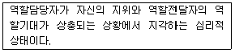
- 역할갈등
- 역할과다
- 과제특성
- 역할모호성
(정답률: 77%)
28. 직무분석 방법과 가장 거리가 먼 것은?
- 면접법
- 관찰법
- 설문지법
- 실험법
(정답률: 74%)
29. 직업적응 이론과 관련하여 개발된 검사도구가 아닌 것은?
- MIQ(Minnesota Importance Questionnaire)
- JDQ(Job Description Questionnaire)
- MSQ(Career Maturity Questionnaire)
- CMI(Career Maturity Questionnaire)
(정답률: 71%)
30. 직무분석의 용도를 모두 고른 것은?
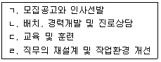
- ㄱ,ㄷ
- ㄱ,ㄴ,ㄹ
- ㄱ,ㄷ,ㄹ
- ㄱ,ㄴ,ㄷ,ㄹ
(정답률: 79%)
31. 분류변인에 관한 설명으로 옳은 것은?
- 인과성의 추론이 가능하다.
- 분류변인을 독립변인으로 사용하면 외적 타당도가 높아진다.
- 연령, 지능, 성격특성, 태도 등과 같이 피험자의 속성에 관한 개인차 변인들을 말한다.
- 내적 타당도가 높다.
(정답률: 57%)
32. Williamson의 진로선택 유형진단 중 ‘어리석은 선택’과 관련된 요인을 모두 고른 것은?
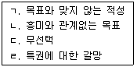
- ㄱ,ㄴ,ㄷ
- ㄱ,ㄴ,ㄹ
- ㄱ,ㄷ,ㄹ
- ㄴ,ㄷ,ㄹ
(정답률: 63%)
33. 스트레스 상황에 대처하는 행동으로 가장 거리가 먼 것은?
- 친구를 만나 실컷 수다를 떤다.
- 이불을 뒤집어쓰고 잠을 자버린다.
- 정해진 시간을 꼭 지키려 애쓴다.
- 현실을 직시하고 타협이나 양보를 한다.
(정답률: 80%)
34. 직업관련 스트레스 요인에 관한 설명으로 옳은 것은?
- 개인의 책임한계나 직무의 목표가 명료하지 않을 때 발생하는 것은 역할갈등이다.
- 스트레스 상황에 대한 통제력이 더 이상 유용하지 못하다고 판단하게 되면 외적 통제자들은 스트레스에 대한 대처노력을 쉽게 포기한다.
- 공식적이고 구조적인 조직은 동료와의 관계와 같은 인간관계 변수 때문에 역할 갈등이 발생한다.
- 스트레스 상황에 노출되면 A유형 행동이 B유형 행동보다 더 많은 부정과 투사기제를 사용한다.
(정답률: 61%)
35. 심리검사에 관한 설명으로 옳은 것은?
- CMI는 태도척도와 능력척도로 구성되며 진로선택 내용과 과정이 통합적으로 반영되었다.
- MBTI는 외향성 · 호감성 · 성실성 · 정서적 불안정성 · 경험개방성의 5요인으로 구성되어 있다.
- MMPI에서 한 하위척도의 점수가 70이라는 것은 규준집단에 비추어볼 때 평균보다 한 표준편차 아래인 것을 의미한다.
- 진로발달 검사의 경우 인간이 가진 보편적인 경향성을 측정하는 것이므로 미국에서 작성된 기존 규준을 우리나라에서 그대로 사용해도 무방하다.
(정답률: 63%)
36. 정신건강에 문제가 있는 사람을 측정하고 구별하기 위해 사용하는 검사는?
- MBTI
- MMPI
- 16PFI
- CPI
(정답률: 65%)
37. Maslow가 제시한 자기실현한 사람의 특징이 아닌 것은?
- 부정적인 감정 표현을 억제한다.
- 현실을 왜곡하지 않고 객관적으로 지각한다.
- 자신이 하는 일에 몰두하고 만족스러워 한다.
- 즐거움과 아름다움을 느낄 수 있는 감상능력이 있다.
(정답률: 70%)
38. 원점수가 가장 높은 사람부터 낮은 사람까지 순서대로 나열한 것은?
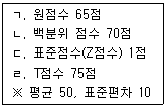
- ㄴ-ㄱ-ㄹ-ㄷ
- ㄴ-ㄷ-ㄱ-ㄹ
- ㄹ-ㄱ-ㄷ-ㄴ
- ㄹ-ㄴ-ㄱ-ㄷ
(정답률: 45%)
39. 직업흥미검사에 관한 설명으로 틀린 것은?
- 특정한 직업분야를 지향하도록 만드는 심리상태를 하나의 객관화된 도식으로 제시하였다.
- 기초적 지향성을 자료(D), 관념(I), 사람(P), 사물(T) 지향으로 분류한다.
- 모두 8가지 직업군을 사용하고 있다.
- 지향성 분류는 Prediger의 분류체계를 기초로 하였다.
(정답률: 57%)
40. 진로교육을 실시하기 위한 지도단계를 순서대로 바르게 나열한 것은?
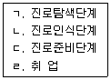
- ㄱ→ㄴ→ㄷ→ㄹ
- ㄴ→ㄱ→ㄷ→ㄹ
- ㄷ→ㄱ→ㄴ→ㄹ
- ㄱ→ㄷ→ㄴ→ㄹ
(정답률: 60%)
3과목: 직업정보론
41. 한국직업사전(2012)에서 알 수 있는 직업관련 정보가 아닌 것은?
- 표준산업분류코드
- 직무개요
- 수행직무
- 임금수준
(정답률: 69%)
42. 공공 직업정보의 일반적인 특성이 아닌 것은?
- 전체 산업이나 직종을 대상으로 한다.
- 조사 분석 및 정리, 제공에 상당한 시간 및 비용이 소모되므로 유료제공이 원칙이다.
- 지속적으로 조사 분석하여 제공되며 장기적인 계획 및 목표에 따라 정보체계의 개선작업 수행이 가능하다.
- 직업별로 특정한 정보만을 강조하지 않고 보편적인 항목으로 이루어진 기초적인 직업정보체계로 구성된다.
(정답률: 80%)
43. 다음은 어떤 국가기술자격 등급의 검정기준에 해당하는가?
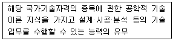
- 기능장
- 기사
- 산업기사
- 기능사
(정답률: 67%)
44. 고용조정지원을 위한 고용안정사업에 해당하는 것은?
- 고용유지지원금
- 정규직전환지원금
- 고용촉진지원금
- 세대간상생고용지원금
(정답률: 61%)
45. 한국표준산업분류의 산업분류 적용원칙에 관한 설명으로 틀린 것은?
- 생산단위는 투입물과 생산공정을 제외한 산출물을 고려하여 그들의 활동을 가장 정확하게 설명된 항목에 분류해야 한다.
- 복합적인 활동단위는 우선적으로 최상급 분류단계를 정확히 결정하고, 순차적으로 중, 소, 세, 세세분류 단계 항목을 결정하여야 한다.
- 산업활동이 결합되어 있는 경우에는 그 활동단위의 주된 활동에 따라서 분류하여야 한다.
- 수수료 또는 계약에 의하여 활동을 수행하는 단위는 자기계정과 자기책임 하에서 생산하는 단위와 동일 항목에 분류되어야 한다.
(정답률: 63%)
46. 한국고용정보원에서 제공하는 ‘워크넷 구인 구직 및 취업동향’에 대한 설명으로 틀린 것은?
- 수록된 통계는 전국 고용센터, 한국산업인력공단, 시·군·구 등에서 입력한 자료를 워크넷 DB로 집계한 것이다.
- 공공고용안정기관의 취업지원서비스를 통해 산출되는 구인·구직 통계를 제공하여, 취업지원사업 등의 국가 고용정책사업 수행을 위한 기초자료를 제공하는 데 목적이 있다.
- 통계표에 수록된 단위가 반올림되어 표기되어 전체 수치와 표내의 합계가 일치하지 않을 수 있다.
- 워크넷을 이용한 구인·구직자들만을 대상으로 하므로, 통계자료가 노동시장 전체의 수급상황과 정확히 일치한다.
(정답률: 79%)
47. 한국직업정보시스템(워크넷 직업·진로)에서 제공하는 학과정보 중 사회계열에 해당하지 않는 학과는?
- 경제학과
- 정치외교학과
- 문헌정보학과
- 신문방송학과
(정답률: 68%)
48. 해외취업·창업·인턴·봉사 등의 해외진출 관련 정보를 통합하여 제공하는 사이트는?
- 월드잡플러스(worldjob.or.kr)
- 일모아사이트(ilmoa.go.kr)
- 커리어넷(career.go.kr)
- 빅데이터(data.go.kr)
(정답률: 80%)
49. 직업능력개발계좌제에 대한 설명으로 틀린 것은?(관련 규정 개정전 문제로 여기서는 기존 정답인 4번을 누르면 정답 처리됩니다. 자세한 내용은 해설을 참고하세요.)
- 단위기간이란 훈련개시일로부터 매 1개월을 단위로 하는 기간을 말한다.
- 수료란 원칙적으로 소정훈련일수의 100분의 80 이상 출석한 것을 말한다.
- 계좌의 유효기간은 계좌 발급일부터 1년으로 한다.
- 계좌적합훈련과정의 인정 요건은 훈련기관과 훈련시간이 각각 15일 이상이고 60시간 이상이어야 한다.
(정답률: 72%)
50. 한국표준직업분류에서 다음에 해당되는 직능수준은?
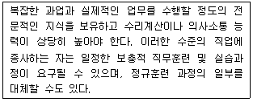
- 제1직능 수준
- 제2직능 수준
- 제3직능 수준
- 제4직능 수준
(정답률: 60%)
51. 한국직업사전(2012)의 부가직업정보 중 작업강도에 관한 설명으로 옳은 것은?
- 작업강도는 해당 직업의 직무를 수행하는 데 필요한 육체적 힘의 강도를 나타낸 것으로 3단계로 분류하였다.
- 작업강도는 심리적·정신적 노동강도는 고려하지 않았다.
- 보통작업은 최고 40kg의 물건을 들어올리고 20kg 정도의 물건을 빈번히 들어올리거나 운반한다.
- 운반이란 물체를 주어진 높이에서 다른 높이로 올리거나 내리는 작업을 의미한다.
(정답률: 66%)
52. 다음은 한국표준직업분류에서 직업분류의 일반 원칙이다. ( )에 알맞은 것은?
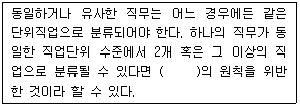
- 단일성
- 배타성
- 포괄성
- 경제성
(정답률: 56%)
53. 다음 중 ‘고용’을 주제로 하는 통계가 아닌 것은?
- 경제활동인구조사
- 한국노동패널조사
- ICT인력동향실태조사
- 사업체기간제근로자현황조사
(정답률: 57%)
54. 직업성립의 일반요건과 가장 거리가 먼 것은?
- 윤리성
- 경제성
- 계속성
- 사회보장성
(정답률: 69%)
55. 직업정보 수집방법으로 면접법에 관한 설명으로 가장 적합하지 않은 것은?
- 표준화 면접은 비표준화 면접보다 타당도가 높다.
- 면접법은 질문지보다 응답범주의 표준화가 어렵다.
- 면접법은 질문지법보다 제3자의 영향을 배제할 수 있다.
- 표준화 면접에는 개방형 및 폐쇄형 질문을 모두 사용할 수 있다.
(정답률: 48%)
56. 다음은 무엇에 관한 정의인가?
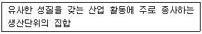
- 직업
- 산업
- 일(task)
- 요소작업
(정답률: 69%)
57. 한국표준산업분류에서 하나 이상의 장소에서 이루어지는 단일 산업활동의 통계단위는?
- 기업집단
- 기업체단위
- 활동유형단위
- 지역단위
(정답률: 69%)
58. 직업정보에 대한 설명으로 틀린 것은?
- 직업정보는 경험이 부족한 내담자들에게 다양한 직업을 접할 기회를 제공한다.
- 직업정보는 수집→체계화→분석→가공→축적→평가 등의 단계를 거쳐 처리한다.
- 직업정보를 수집할 때는 항상 최신의 자료인지 확인한다.
- 동일한 정보라 할지라도 다각적인 분석을 시도하여 해석을 풍부히 한다.
(정답률: 77%)
59. 워크넷(구직)에서 채용정보 검색조건에 해당하지 않는 것은?
- 희망임금
- 학력
- 경력
- 연령
(정답률: 68%)
60. 다음 중 국가기술자격이 아닌 것은?
- 화재감식평기사
- 국제의료관광코디네이터
- 기상감정기사
- 문화재수리기술사
(정답률: 55%)
4과목: 노동시장론
61. 임금이 하락할 경우 장기노동수요곡선에 대한 설명으로 옳은 것을 모두 고른 것은?
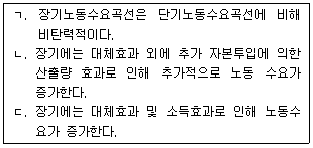
- ㄱ
- ㄴ
- ㄱ,ㄴ
- ㄱ,ㄴ,ㄷ
(정답률: 47%)
62. A국가의 전체 인구 5000만명 중 은퇴한 노년층과 15세 미만 유년층이 각각 1000만명이다. 또한, 취업자가 1500만명이고 실업자는 500만명이라고 한다. 이 국가의 실업률(ㄱ)과 경제활동참가율(ㄴ)은?
- ㄱ – 25%, ㄴ – 40%
- ㄱ – 25%, ㄴ – 50%
- ㄱ – 33%, ㄴ – 40%
- ㄱ – 33%, ㄴ – 50%
(정답률: 65%)
63. 직업별 노동조합(craft union)에 관한 설명으로 틀린 것은?
- 동일직업의 노동자들이 소속 기업이나 공장에 관계없이 가입한 횡적 조직이었다.
- 저임금의 미숙련노동자, 여성, 연소노동자들도 조합에 가입할 수 있었다.
- 조합원간의 연대를 강화하기 위해 공제활동에 의한 조합원간의 상호부조에 주력했다.
- 산업혁명 초기 숙련노동자가 노동시장을 독점하기 위한 조직으로 결성하였다.
(정답률: 66%)
64. 근로조건의 차이에 의해 발생하는 임금의 차이는?
- 보상소득격차
- 보상임금격차
- 동등임금비율
- 조건부 임금격차
(정답률: 66%)
65. 다음은 어떤 형태의 능률급인가?
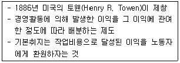
- 표준시간제
- 이익분배제
- 할시제
- 테일러제
(정답률: 77%)
66. 다음 Hicks의 교섭모형과 기대파업기간에 관한 설명으로 틀린 것은?
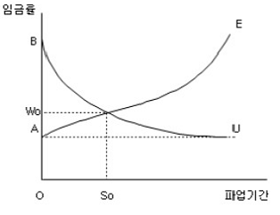
- B에서의 우하향 곡선이 노동조합의 저항곡선이다.
- S0 기간의 파업을 통해 교차점에 도달했으며 이때 결정된 임금률이 W0로 됨을 보여준다.
- 사용자는 노동조합이 OW0보다 더 높은 임금을 요구하면 파업을 두려워하여 그 요구를 수용할 것이다.
- 노사가 S0에서 파업을 중단하는 것이 이익이 된다는 것을 안다면 W0 임금수준에서 교섭을 타결할 것이다.
(정답률: 69%)
67. 노동공급의 탄력성 결정요인이 아닌 것은?
- 산업구조의 변화
- 노동이동의 용이성 정도
- 여성의 취업기회의 창출가능성 여부
- 다른 생산요소로의 노동의 대체 가능성
(정답률: 48%)
68. 노동수요가 증가하고 동시에 노동공급이 증가하면 임금수준과 고용의 변화로 옳은 것은?
- 임금은 상승하고 고용은 증가한다.
- 고용은 증가하고 임금은 하락한다.
- 고용은 증가하고, 임금의 변화방향은 불확실하다.
- 임금은 상승하고 고용의 변화방향은 불확실하다.
(정답률: 55%)
69. 최저임금제의 도입이 근로자에게 유리하게 될 가능성이 높은 경우는?
- 노동시장이 수요독점 상태일 경우
- 최저임금과 한계요소비용이 일치할 경우
- 최저임금이 시장균형 임금수준보다 낮을 경우
- 노동시장이 완전경쟁상태일 경우
(정답률: 55%)
70. 기업특수적 인적자본형성의 원인이 아닌 것은?
- 기업간 차별화된 제품생산
- 생산공정의 특유성
- 생산장비의 특유성
- 일반적 직업훈련의 차이
(정답률: 62%)
71. 임금체계의 유형 중 연공급의 단점에 대한 설명으로 틀린 것은?
- 위계질서의 확립이 어렵다.
- 동기부여효과가 미약하다.
- 비합리적인 인건비 지출을 하게 된다.
- 능력·업무와의 연계성이 미약하다.
(정답률: 66%)
72. 경기적 실업에 대한 대책으로 가장 적합한 것은?
- 지역간 이동 촉진
- 유효수요의 확대
- 기업의 퇴직자 취업알선
- 구인·구직에 대한 전산망 확대
(정답률: 67%)
73. 노사관계의 3주체(tripartite)를 바르게 짝지은 것은?
- 노동자 - 사용자 - 정부
- 노동자 – 사용자 – 국회
- 노동자 – 사용자 – 정당
- 노동자 – 사용자 – 사회단체
(정답률: 78%)
74. 미국에서 1935년에 제정된 전국노사관계법(National Labor Relation Act : NLRA, 일명 와그너법) 이후에 확립된 노사관계는?
- 뉴딜적 노사관계
- 온건주의적 노사관계
- 바이마르적 노사관계
- 태프트 – 하트리적 노사관계
(정답률: 71%)
75. 실업급여의 효과에 대한 설명으로 가장 적합한 것은?
- 노동시간을 늘리고 경제활동참가도 증대시킨다.
- 노동시간을 단축시키고 경제활동참가도 감소시킨다.
- 노동시간의 증·감은 불분명하지만 경제활동참가는 증대시킨다.
- 노동시간, 경제활동참가 모두 불분명하다.
(정답률: 71%)
76. 다음 중 노동시장 유연성(Labor maket flexibility)에 관한 설명으로 틀린 것은?
- 노동시장 유연성이란 일반적으로 외부환경변화에 인적자원이 신속하고 효율적으로 재배분되는 노동시장의 능력을 지칭한다.
- 외부적 수량적 유연성이란 해고를 좀 더 자유롭게 하고 다양한 형태의 파트타임직을 확장시키는 것을 포함한다.
- 외부적 수량적 유연성의 예로는 변형시간근로제, 탄력적 근무시간제 등이 있다.
- 기능적 유연성이란 생산과정 변화에 대한 근로자의 적응력을 높이는 것을 의미한다.
(정답률: 47%)
77. 다음 중 기업이 이윤을 극대화하기 위해 장기노동수요를 감소시켜야 하는 경우는?
- 1원당 노동의 한계생산이 1원당 자본의 한계생산보다 작을 경우
- 1원당 노동의 한계생산이 1원당 자본의 한계생산과 일치할 경우
- 노동의 한계생산물가치가 명목임금보다 클 경우
- 노동의 한계생산량이 실질임금보다 클 경우
(정답률: 60%)
78. 다음 현상을 설명하는 실업의 종류와 대책을 연결한 것으로 옳은 것은?
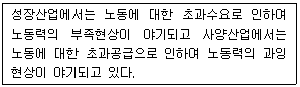
- 마찰적 실업 – 구인, 구직정보망 확충
- 경기적 실업 – 유효수요의 증대
- 구조적 실업 – 인력정책
- 기술적 실업 – 기술혁신
(정답률: 63%)
79. 생산적 임금제를 따를 때 물가상승률이 3%이고, 실질생산성 증가율이 7%라고 하면 명목임금은 얼마나 인상되어야 하는가?
- 2%
- 4%
- 10%
- 15%
(정답률: 68%)
80. 외국인 노동자들의 모든 근로가 합법화되었을 때 외국인 노동수요의 임금탄력성이 0.6 이고 임금이 15% 상승하면, 외국인 노동자들에 대한 수요는 몇 % 감소하는가?
- 6%
- 9%
- 12%
- 15%
(정답률: 69%)
5과목: 노동관계법규
81. 근로기준법상 임금에 관한 설명으로 틀린 것은?
- 임금은 원칙적으로 통화(通貨)로 직접 근로자에게 그 전액을 지급하여야 한다.
- 사용자는 근로자가 출산, 질병, 재해 등 비상(非常)한 경우의 비용에 충당하기 위하여 임금 지급을 청구하면 지급기일 전이라도 향후 제공할 근로에 대한 임금을 지급하여야 한다.
- 임금은 원칙적으로 매월 1회 이상 일정한 날짜를 정하여 지급하여야 한다.
- 사업이 여러 차례의 도급에 따라 행하여지는 경우에 하수급인(下受給人)이 직상(直上)수급인의 귀책사유로 근로자에게 임금을 지급하지 못한 경우에는 그 직상 수급인은 그 하수급인과 연대하여 책임을 진다.
(정답률: 61%)
82. 고용상 연령차별금지 및 고령자고용촉진에 관한 법률상 고령자 고용정보센터의 업무에 해당되지 않는 것은?
- 고령자에 대한 취업알선
- 고령자 인재은행의 지정
- 고령자에 대한 직장적응훈련
- 고령자 고용촉진을 위한 홍보
(정답률: 58%)
83. 헌법상 근로의 권리에 관한 내용으로 틀린 것은?
- 국가의 고용증진의무
- 근로조건기준의 법정주의
- 여자와 연소자의 근로의 특별보호
- 국가유공자 등에 대한 근로기회의 평등보장
(정답률: 58%)
84. 고용정책 기본법령상 대량 고용변동의 신고기준으로 옳은 것은?
- 상시 근로자 200명 미만을 사용하는 사업 또는 사업장에서 1개월 이내에 40명 이상 이직할 경우
- 상시 근로자 200명 미만을 사용하는 사업 또는 사업장에서 1개월 이내에 상시 근로자 총수의 100분의 20이상 이직할 경우
- 상시 근로자 300명 미만을 사용하는 사업 또는 사업장에서 1개월 이내에 30명 이상 이직할 경우
- 상시 근로자 300명 미만을 사용하는 사업 또는 사업장에서 1개월 이내에 상시 근로자 총수의 100분의 10이상 이직할 경우
(정답률: 61%)
85. 근로기준법상 근로시간과 휴게시간에 관한 설명으로 틀린 것은?
- 1주 간의 근로시간은 휴게시간을 제외하고 40시간을 초과할 수 없다.
- 1일의 근로시간은 휴게시간을 제외하고 8시간을 초과할 수 없다.
- 사용자는 근로시간이 4시간인 경우에는 30분 이상, 8시간인 경우에는 1시간 이상의 휴게시간을 근로시간 이후에 주어야 한다.
- 휴게시간은 근로자가 자유롭게 이용할 수 있다.
(정답률: 65%)
86. 고용보험상 취업촉진수당의 종류가 아닌 것은?
- 특별연장급여
- 조기재취업 수당
- 광역 구직활동비
- 이주비
(정답률: 73%)
87. 근로기준법의 기본원칙에 관한 설명으로 틀린 것은?
- 근로기준법에서 정하는 근로조건은 최저기준이므로 근로 관계 당사자는 이 기준을 이유로 근로조건을 낮출 수 없다.
- 근로조건은 근로자와 사용자가 동등한 지위에서 사용자의 의사에 따라 결정하여야 한다.
- 근로자와 사용자는 각자가 단체협약, 취업규칙과 근로계약을 지키고 성실하게 이행할 의무가 있다.
- 사용자는 근로자에 대하여 남녀의 성(性)을 이유로 차별적 대우를 하지 못하고, 국적·신앙 또는 사회적 신분을 이유로 근로조건에 대한 차별적 처우를 하지 못한다.
(정답률: 65%)
88. 근로자직업능력 개발법령상 직업능력개발사업을 하는 사업주에게 지원되는 것으로 틀린 것은?
- 근로자를 대상으로 하는 자격검정사업 비용
- 직업능력개발훈련을 위한 시설의 설치 사업비용
- 근로자의 경력 개발 관리를 위하여 실시하는 사업비용
- 고용노동부장관의 인정을 받은 직업능력개발훈련과정의 수강비용
(정답률: 57%)
89. 직업안정법상 유료직업소개사업을 하는 자가 사업소별로 고용해야 하는 직업상담원의 자격으로 틀린 것은?
- 「국가기술자격법」 에 따른 직업상담사 1급 또는 2급
- 「사회복지사업법」 에 따른 사회복지사
- 「고등교육법」 에 따른 교원으로서 교원 근무 경력이 1년 이상인 사람
- 「공인노무사법」 에 따른 공인노무사
(정답률: 70%)
90. 고용정책기본법의 고용정책을 수립·시행하는 경우에 실현되도록 하여야 할 기본원칙으로 틀린 것은?
- 사업주의 자율적인 고용관리를 존중
- 구인자의 자발적인 구인노력 촉진
- 근로자의 직업선택의 자유 확보
- 고용정책을 효율적이고 성과 지향적으로 수립·시행
(정답률: 44%)
91. 남녀고용평등과 일·가정 양립에 관한 법률상의 분쟁해결에서 입증책임은 누가 부담하는가?
- 근로자
- 노동조합
- 사업주
- 고용평등위원회
(정답률: 66%)
92. 근로자직업능력 개발법상 근로자 직업능력개발훈련이 중요시되어야 한다고 명시된 대상이 아닌 것은?
- 제조업의 사무직으로 종사하는 근로자
- 제대군인 및 전역예정자
- 여성근로자
- 고령자 · 장애인
(정답률: 71%)
93. 고용보험법상 피보험자격에 관한 설명으로 틀린 것은?
- 「고용보험 및 산업재해보상보험의 보험료징수 등에 관한 법률」의 규정에 따른 보험관계 성립일 전에 고용된 근로자의 경우에는 그 보험관계가 성립한 날의 다음 날에 그 피보험자격을 취득한다.
- 피보험자가 이직한 경우에는 이직한 날의 다음 날에 그 피보험자격을 상실한다.
- 근로자가 보험관계가 성립되어 있는 둘 이상의 사업에 동시에 고용되어 있는 경우에는 고용노동부령으로 정하는 바에 따라 그 중 한 사업의 근로자로서의 피보험자격을 취득한다.
- 피보험자 또는 피보험자였던 자는 언제든지 고용노동부장관에게 피보험자격의 취득 또는 상실에 관한 확인을 청구할 수 있다.
(정답률: 54%)
94. 고용상 연령차별금지 및 고령자고용촉진에 관한 법률상 부동산 및 임대업의 고령자 기준고용률은?
- 상시 근로자수의 100분의 1
- 상시 근로자수의 100분의 3
- 상시 근로자수의 100분의 6
- 상시 근로자수의 100분의 7
(정답률: 71%)
95. 다음 ( )에 알맞은 것은?
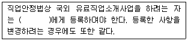
- 특별자치도지사 · 시장 · 군수 · 구청장
- 고용노동부장관
- 보건복지부장관
- 고용센터장
(정답률: 75%)
96. 단결권에 관한 설명으로 틀린 것은?
- 단결권은 근로조건의 유지 · 개선과 근로자의 사회적 · 경제적 · 정치적 지위의 향상을 직접적인 목적으로 한다.
- 근로자 개인의 단결권과 노동조합의 단결권은 서로 불가분의 관계에 있으나 때로는 대립하는 경우도 있다.
- 독일의 기본법은 단결권만 명시하고 있으나 여기에 단체교섭권과 단체행동권까지 포함되는 것으로 해석된다.
- 단결권은 시민법하의 형식적 평등관계를 시정하고 실질적인 노사대등관계의 형성을 목적으로 한다.
(정답률: 48%)
97. 남녀고용평등과 일 · 가정 양립 지원에 관한 법률상 육아휴직에 관한 설명으로 틀린 것은?
- 육아휴직의 기간은 1년 이내로 한다.
- 파견근로자의 육아휴직기간은 「파견근로자보호 등에 관한 법률」 제 6조에 따른 근로자 파견기간에 산입한다.
- 사업을 계속할 수 없는 경우를 제외하고 육아휴직기간에는 육아휴직을 이유로 그 근로자를 해고하지 못한다.
- 육아휴직 기간은 근속기간에 포함된다.
(정답률: 69%)
98. 근로자 직업능력 개발법령상 훈련의 목적에 따른 직업능력개발훈련에 해당하지 않는 것은?
- 양성훈련
- 향상훈련
- 현장훈련
- 전직훈련
(정답률: 65%)
99. 고용상 연령차별금지 및 고령자고용촉진에 관한 법률에서 사용하는 용어에 관한 설명으로 틀린 것은?
- “고령자”란 55세 이상인 사람을 말한다.
- “준고령자”란 50세 이상 55세 미만인 사람을 말한다.
- “사업주”란 근로자 기준법상 사용자를 말한다.
- “근로자”란 근로기준법상 근로자를 말한다.
(정답률: 60%)
100. 남녀고용평등과 일·가정 양립 지원에 관한 법률상 직장 내 성희롱에 관한 설명으로 틀린 것은?(관련 규정 개정전 문제로 여기서는 기존정답인 4번을 누르면 정답 처리됩니다. 자세한 내용은 해설을 참고하세요.)
- 사업주는 직장 내 성희롱 예방을 위한 교육을 연 1회 이상 하여야 한다.
- 직장 내 성희롱 예방 교육은 사업의 규모나 특성 등을 고려하여 직원연수 · 조회 · 회의, 인터넷 등 정보통신망을 이용한 사이버 교육 등을 통하여 실시 할 수 있다.
- 상시 10명 미만의 근로자를 고용하는 사업의 사업주는 홍보물을 게시하거나 배포하는 방법으로 직장 내 성희롱 예방교육을 할 수 있다.
- 사업주는 고객 등 업무와 밀접한 관련이 있는 자가 업무수행 과정에서 성적인 언동 등을 통하여 근로자에게 성적 굴욕감 또는 혐오감 등을 느끼게 하여 해당 근로자가 그로 인한 고충 해소를 요청할 경우 배치전환 등의 조치를 취해야 한다.
(정답률: 68%)